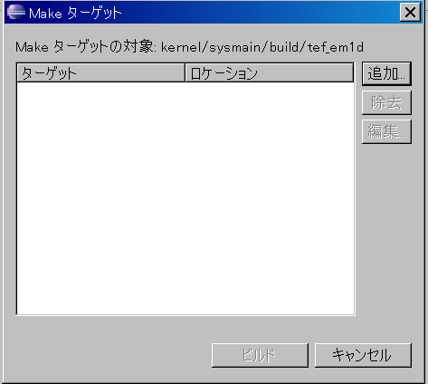
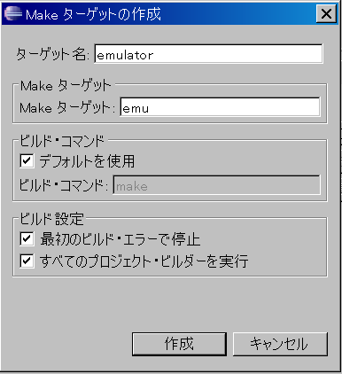

Eclipse のウィンドウの左袖に表示されている「C/C++プロジェクト」ビューに表示されているビルド対象の「ビルド先ディレクトリ」をマウスでクリックして選択状態にします。
その状態で、ツールバーの「プロジェクト」メニューをクリックして、表示される以下の項目を選択するとビルドを開始します。
「T-Engine Target の Make all」
"make all" を実行して、オブジェクトを作成します。
「T-Engine Target の Make clean」
"make clean" を実行して、作成したオブジェクトをクリアします。Make clean を行った後に、Make all を行うと、make を完全にやり直すことができます。
「T-Engine Target の Make...」
「Make ターゲット」のダイアログが表示されますので、ターゲットを選択して「ビルド」ボタンを押すことにより、"make <選択したターゲット>" を実行します。
実行したいターゲットが表示されていない場合は、ダイアログ内の「追加」ボタンを押して、「ターゲット名」と「Make ターゲット」を設定して追加してください。
ビルドを開始すると、「コンソール」ビューにメッセージが順次表示されます。以下のメッセージが表示されたらビルド終了です。
**** Build Finished ****なお、「ビルド先ディレクトリ」を選択して、右クリックすると「Make ターゲット」 の項目が表示されますが、ここからは「ビルド」できません。必ず、ツールバーの「プロジェクト」メニューから「T-Engine Target の Make ・・・」を選択してください。
以下の手順で、T-Kernel システムをビルドします。
(1) ビルド先ディレクトリとして以下のディレクトリを選択します。
kernel\sysmain\build\tef_em1d(2) 「プロジェクト」→「T-Engine Target の Make...」を選択して、ターゲットとして「emulator」を選択して「ビルド」ボタンを押します。ターゲットが表示されない場合は「追加」ボタンを押して追加してください。
ターゲット名 emulator (任意の名称でよい)
Make ターゲット emu 
(3) 「コンソール」ビューに以下のメッセージが表示されたらビルド終了です。
(4) 以下のビルド結果がビルド先ディレクトリに作成されます。
RAM 実行用 (デバッグ用)
kernel-ram.sys RAM 版 T-Kernel の実行オブジェクト
kernel-ram.map RAM 版 T-Kernel のリンクマップ
kernel-ram.mot RAM 版 T-Kernel のロードイメージ (S-Format)
kernel-ram.bin RAM 版 T-Kernel のロードイメージ (Binary)
rom-dbg.bin Emulator 用 RAM 版 ロードイメージ (Binary)
( T-Monitor + RomInfo )ROM 実行用 (Flash ROM 書込み用)
kernel-rom.rom ROM 版 T-Kernel の実行オブジェクト
kernel-rom.map ROM 版 T-Kernel のリンクマップ
kernel-rom.mot ROM 版 T-Kernel のロードイメージ (S-Format)
rom.bin Emulator 用 ROM ロードイメージ (Binary)
( T-Monitor + RomInfo + T-Kernel )また、フォルダ "C:\cygwin\usr\local\tef_em1d\tkernel_source\bin\tef_em1d" に、上記のビルド結果、および Flash ROM 書込み用の以下のファイルがコピーされます。
rominfo-ram.mot RAM 版 RomInfo のロードイメージ (S-Format)
rominfo-rom.mot ROM 版 RomInfo のロードイメージ (S-Format)
tmonitor.mot T-Monitor のロードイメージ (S-Format)
tmonitor.map T-Monitor のリンクマップEclipse でデバッガ (gdb) を使用する場合は、デバッグ情報付きの実行オブジェクトを作成する必要があります。
そのために、以下の手順でビルド先ディレクトリの "tef_em1d" ディレクトリをコピーして、"tef_em1d.debug" ディレクトリを作成します。
(1) Eclipse のウィンドウの左袖に表示されている「C/C++プロジェクト」のビューに表示されている "tef_em1d" ディレクトリの上にマウスを移動し、その上でマウスの右ボタンをクリックして表示されるメニューの「コピー」を選択します。
(2) 続いて、"tef_em1d" ディレクトリの親ディレクトリの "build" ディレクトリの上にマウスを移動し、その上でマウスの右ボタンをクリックして表示されるメニューの「貼り付け」を選択します。
(3) 新規名を "tef_em1d.debug" に設定して、「OK」ボタンを押します。
(4) 作成した "tef_em1d.debug" ディレクトリをビルド先ディレクトリとしてシステムのビルド手順を行ってください。
"tef_em1d" で make を実行した場合は、必ず「T-Engine Target の Make Clean」を選択して、ビルド結果をクリアしてから make を実行してください。
フォルダ "C:\cygwin\usr\local\tef_em1d\tkernel_source\bin\tef_em1d" には、"tef_em1d" あるいは "tef_em1d.debug" のどちらかで最後にビルドした結果が入ります。オブジェクトのファイル名はどちらも同じであり、ファイル名による区別はできませんので注意して下さい。
ビルド先ディレクトリ "tef_em1d" での「T-Engine Target の Make...」実行には、以下に示す「Make ターゲット」が用意されていますので、必要に応じて適切な「Make ターゲット」を設定して使用してください。
<モジュール>
指定した <モジュール> 個別の make を実行します。
| モジュール | make 実行ディレクトリ |
|---|---|
| tkernel | kernel/tkernel/build/<機種名> |
| sysmgr | kernel/sysmgr/build/<機種名> |
| sysinit | kernel/sysinit/build/<機種名> |
| libraries | lib/build/<機種名> |
| drivers | driver/<機種名>/build |
| config | config/build/<機種名> |
| monitor | monitor/build/<機種名> |
all - 「T-Engine Target の Make all」
以下のモジュールに対して make を実行して、kernel オブジェクトを作成します。
tkernel, sysmgr, sysinit, libraries, drivers
emu
以下のモジュールに対して make を実行して、エミュレータの実行イメージを作成します。
all (tkernel, sysmgr, sysinit, libraries, drivers) + config, monitor
clean - 「T-Engine Target の Make Clean」
以下のモジュールに対して make clean を実行して、make (make all) で作成したオブジェクトをクリアします。( config および monitor モジュールのオブジェクトはクリアしません。)
tkernel, sysmgr, sysinit, libraries, drivers
source
以下のモジュールに対して make source を実行して、システムコール/拡張 SVC インタフェースライブラリのソースおよび定義ファイルを作成します。 ( 通常の make でもソースおよび定義ファイルを作成します。)
libraries, drivers
clean_source
以下のモジュールに対して、make clean_source を実行して、make source で作成したソースおよび定義ファイルをクリアします。
libraries, drivers
clean_all
make clean, make clean_source の両方を実行します。
clean_config
config モジュールに対して、make clean を実行して、RomInfo のオブジェクトをクリアします。
clean_monitor
monitor モジュールに対して、make clean を実行して、T-Monitor のオブジェクトをクリアします。
システムのビルドでは、全デバイスドライバを含むオブジェクトファイルを作成しますが、不要なデバイスドライバを含めないためには、ビルド先ディレクトリ "tef_em1d" 内の "Makefile" を編集して、以下の定義のうち、不要なドライバに対応するものを削除してください。
DRV_CONSOLE = yes
DRV_CLOCK = yes
DRV_SYSDISK = yes
DRV_SCREEN = yes
DRV_KBPD = yes
DRV_LOWKBPD = yesまた、"kernel\sysmain\src\usermain.c" には、デバッグ用のサンプルコードが入っていますが、これを無効にするには、以下の定義を削除してください。
CFLAGS += -DDEBUG_SAMPLE